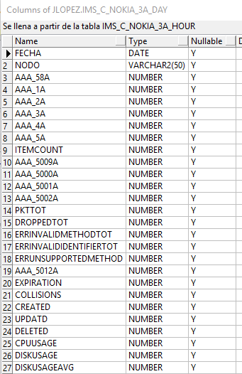

GESTION DE RECLAMOS - SMART¶
1. OBJETIVO¶
El presente documento buscar explicar y detallar el proceso que generan las novedades de reclamos.
2. DOCUMENTACIO INTERFAZ WEB DE ABM RECLAMOS¶

Menú Inicio, sólo esta implementado el link Tickets.

Bandeja de Entrada Tickets. Los tickets asignados al grupo son los que aún no fueron asignados a un usuario para su procesamiento y que además se encuentran abiertos. Luego de que son asignados por el administrador, pasan a la bandeja de tickets en proceso. Los usuarios pueden reasignar los tickets a otro usuario (queda guardado el log)
Asignación de tickets a los responsables. Sólo los administradores podrán utilizar esta funcionalidad.
Edición de un ticket. Modificación e inserción de información a los tickets. Mediante el número de cuenta que se encuentra en el detalle del problema (precondición necesaria), se prosigue buscando al cliente asociado, si éste no existe se lo puede cargar (y luego también modificar). También se pueden agregar comentarios y agregar datos de cierre.